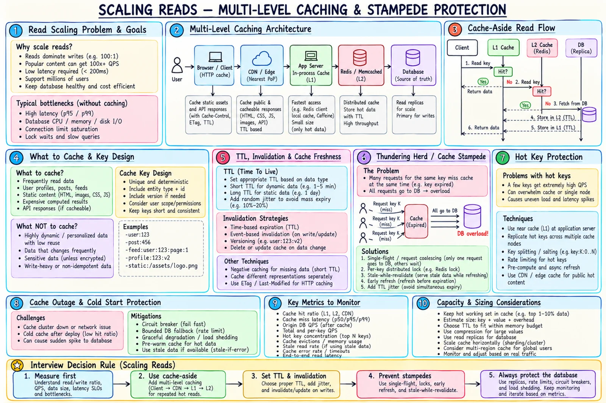

Topic · Scaling Reads
Multi-Level Caching and Stampede Protection
Remove repeated origin work with layered caches - and protect the origin when keys expire, get hot, or the cache disappears.


Quick Revision
- Cache-aside: cache → miss → origin → fill with TTL/version.
- Key includes every dimension that changes the response.
- TTL bounds age; it doesn't fix ordering - use versions.
- Stampede → single-flight, jitter, stale-while-revalidate.
- Hot key → L1, replicated entries, CDN, coalescing.
- Cache down → breaker + bounded DB fallback, never unlimited misses.
Cache-aside and layers
- Read key from cache; hit → return.
- Miss → fetch from the source of truth.
- Fill with TTL/version; return.
Only demanded values are cached and the DB stays the truth. Costs: miss latency, app-owned invalidation, stampede risk.
| Layer | Best use | Caveat |
|---|---|---|
| Browser/mobile | Static assets, user-local data | Hard to invalidate |
| CDN/edge | Public content near users | Keys, privacy, purge |
| L1 in-process | Tiny, very hot, stable data | Per-instance divergence |
| L2 distributed | Shared app data | Network hop, hot shards |
| DB buffer cache | Hot pages/indexes | Still costs DB CPU/connections |
What to cache and how to key it
- Prefer - read-often/change-rarely entities, expensive aggregates, hot feed/product/profile projections, controlled public HTTP responses, short-TTL negative results.
- Avoid - strictly fresh dynamic values, low-reuse scans, huge values, unscoped sensitive data, reads the DB already serves cheaply.
{namespace}:{tenant}:{entity}:{id}:{view}:{locale}:{version}
profile:tenant42:user123:public:en:v3
product:123:detail:INR:v7
feed:user123:page:first:v5
not-found:product:999:v1
Include tenant, locale, currency, permission scope, experiment, projection, and schema version.
TTL and invalidation
- Short TTL for dynamic data, longer for stable; add jitter.
- Invalidate after durable commit; versions/epochs for out-of-order updates.
- HTTP:
ETag,Last-Modified, versioned URLs,stale-while-revalidate,stale-if-error.
Stampede, hot keys, outages
- Stampede - single-flight, per-key lock with timeout, refresh-ahead, stale-while-revalidate, jitter, origin concurrency cap.
- Hot key - L1 near cache, replicate entry across nodes/regions, coalescing, CDN for public data, salting only if safe, per-key rate limits.
- Outage - circuit breaker, bounded DB fallback, origin QPS cap, serve stale where safe, degrade, pre-warm critical keys, admission control on cold start.
Trade-offs
| Choice | Benefit | Cost |
|---|---|---|
| Cache-aside | Simple, DB authoritative | Miss latency, invalidation, stampede |
| L1 cache | Lowest latency | Divergence, multiplied memory |
| Shared L2 | Shared reuse | Network dependency, hot shards |
| Short TTL | Fresher | More misses |
| Long TTL | Higher hit ratio | Bigger stale window |
| Invalidate on write | Fresher | Lost/out-of-order invalidations |
| Update cache on write | Warm cache | Dual-write race |
| Serve stale on failure | Availability, origin safety | Unsafe for balances, permissions, inventory |
Failure modes
- Stampede - single-flight, locks, jitter, SWR.
- Avalanche - randomized TTL, staged refresh.
- Hot key overloads a node - near cache, replication, CDN, coalescing.
- Cache outage crushes DB - breaker, bounded fallback, stale serving, shedding.
- Cold cache after deploy - gradual warm-up, preload top keys.
- Stale after update - outbox/CDC, versions, TTL safety net.
- Older fill overwrites newer - version-aware compare-and-set.
- Negative cache hides new object - short TTL, invalidate on create.
- Cache leaks private data - auth scope in key,
private/no-store. - High hit ratio, poor UX - byte hit ratio, end-to-end latency.
- Retries amplify outage - retry budgets, backoff + jitter, breakers.
Interview practice
Answer aloud, then reveal.
Microsoft (Mar 2026): LRU with TTL - are excess misses from size or policy?
Split misses into cold, expiry, invalidation, capacity. Check working set, memory, evictions, TTL spread, reuse distance, hit ratio by cohort. Scans evicting hot keys → fix admission/eviction; hot set too big → add capacity or shrink entries.
Microsoft (Nov 2025): distributed vs single-machine cache.
Local: no hop, but limited and divergent. Distributed: shared capacity, but partitioning, replication, membership, hot keys, network failures. Common: small L1 over shared L2.
A popular cache entry expires. What happens?
Single-flight/lock so one request refills; others wait or get stale. Plus jitter, refresh-ahead, SWR, origin limits.
Serve millions of reads for one key?
CDN, replicated entries, L1, coalescing, pre-warm, per-key limits. More shards don't split one key.
Cache personalized responses safely?
Private client cache or user-scoped keys with user/tenant/permission/version; avoid shared CDN unless auth-aware; private/no-store.
Redis is down - now what?
Fail fast or degrade: bounded DB fallback, breaker, shedding, L1/stale, gradual warm-up.